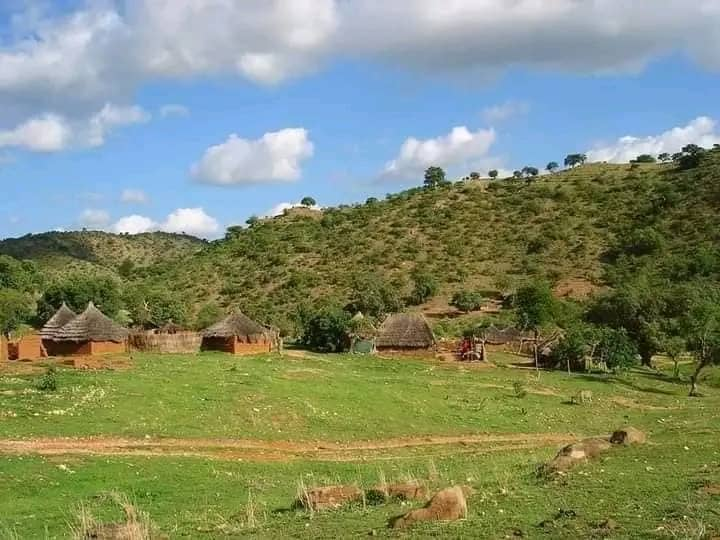
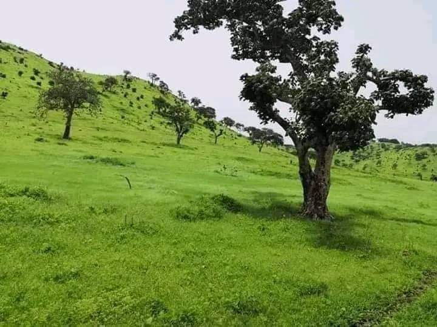
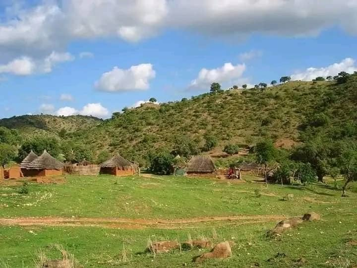
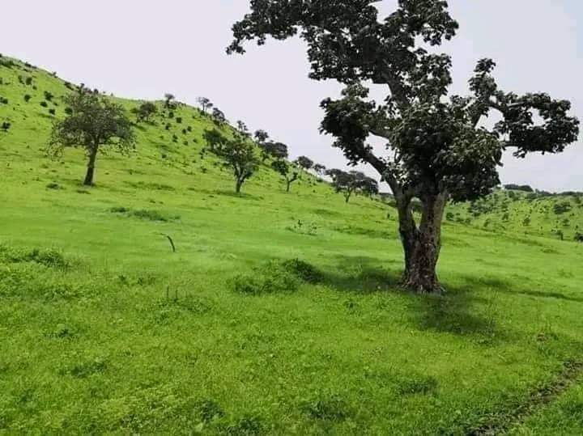

Tourism
Kauda, located in South Kordofan, is distinguished by the presence of a waterfall at the western entrance,
known as the Baram Gate, along with the Seref Al-Jamous Forest surrounding the area.
These natural landmarks have made the city a well-known tourist destination.
The city enjoys a moderate climate throughout the year due to its elevation above sea level,
making it an ideal place to visit year-round.
Kauda, located in South Kordofan, is distinguished by the presence of a waterfall at the western entrance,
known as the Baram Gate, along with the Seref Al-Jamous Forest surrounding the area.
These natural landmarks have made the city a well-known tourist destination.
The city enjoys a moderate climate throughout the year due to its elevation above sea level,
making it an ideal place to visit year-round.
Location
Kauda is situated in South Kordofan, about 96 km east of Kadugli,
65 km west of the border city of Talodi,
and 35 km south of the city of Heiban.
It is also 150 km north of the regions of Jawa and Lake Al-Abiad.
The city is located in a mountainous area and is surrounded by the Morod Mountains on all sides.
Kauda is situated in South Kordofan, about 96 km east of Kadugli,
65 km west of the border city of Talodi,
and 35 km south of the city of Heiban.
It is also 150 km north of the regions of Jawa and Lake Al-Abiad.
The city is located in a mountainous area and is surrounded by the Morod Mountains on all sides.
Historical Significance
Kauda is a major center for the Atoro tribe,
one of the important tribes in the region.
The city is known for its cultural and religious diversity
with its residents practicing both Islam and Christianity,
living in religious tolerance. Notable figures from the city include King Arnokabi and King Hussein Nalo Kudi
as well as famous athletes such as Abdu Tima and marathon champion Jacob Andrea
Kauda is a major center for the Atoro tribe,
one of the important tribes in the region.
The city is known for its cultural and religious diversity
with its residents practicing both Islam and Christianity,
living in religious tolerance. Notable figures from the city include King Arnokabi and King Hussein Nalo Kudi
as well as famous athletes such as Abdu Tima and marathon champion Jacob Andrea
Tips for Visitors
Enjoy visiting the waterfall and the Seref Al-Jamous Forest surrounding the city.
If you enjoy a moderate climate, the city offers an ideal weather throughout the year.
Explore nearby villages such as Um Duwal, Seref Al-Jamous, and Baram.
Be sure to respect the cultural and religious diversity of the area, as its inhabitants live in religious harmony.
Enjoy visiting the waterfall and the Seref Al-Jamous Forest surrounding the city.
If you enjoy a moderate climate, the city offers an ideal weather throughout the year.
Explore nearby villages such as Um Duwal, Seref Al-Jamous, and Baram.
Be sure to respect the cultural and religious diversity of the area, as its inhabitants live in religious harmony.
Gallery


 


